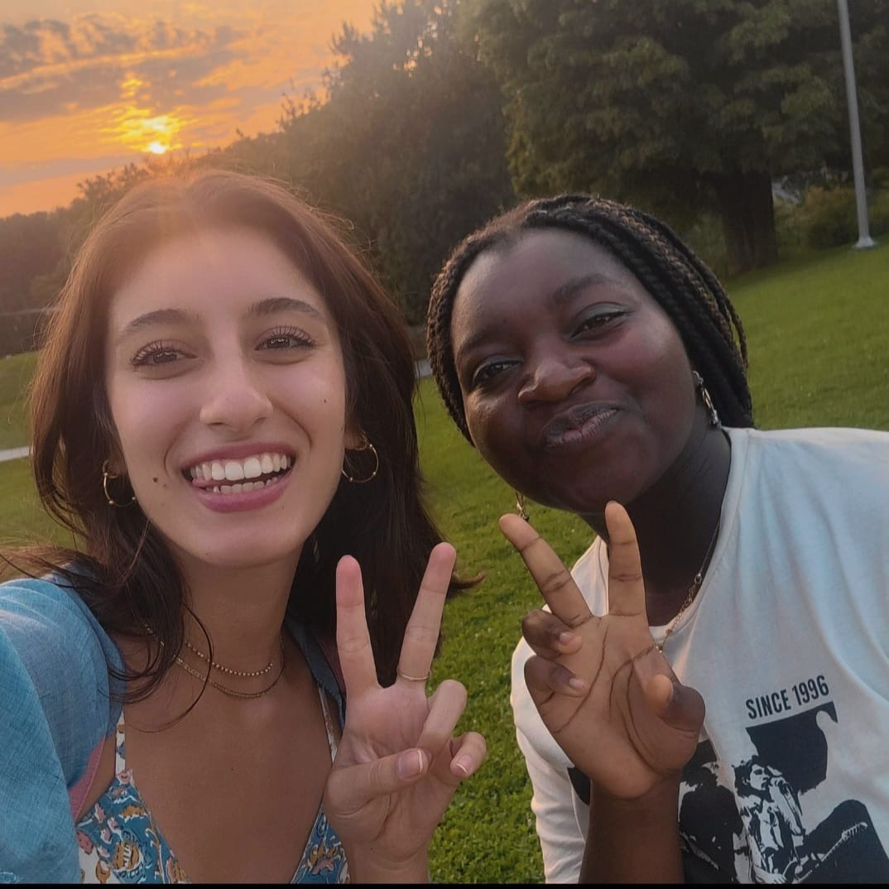

Des moments qui prennent vie.
Des fêtes accessibles pour les enfants en situation de vulnérabilité, organisées avec les organismes de leur quartier par deux étudiantes en médecine et 36 bénévoles.
Une année, neuf lumières.

Deux étudiantes, une idée simple.
Chaque enfant mérite sa journée de fête, et d'y être pleinement inclus. Compassion, communauté, inclusion : c'est ce qui guide tout ce qu'on organise.
36bénévoles
9fêtes
12organismes
Fondation du Dr Julien, Répit Providence, Centre Mountain Sights, PROMIS, Maison de la culture CDN, Carrefour Jeunesse Emploi, Garage à Musique, Mini Molars Club, et de nos commanditaires Scholastic, Librairie Gallimard, Les Débrouillards et Fondation Réno-Jouets.
Le prochain moment se prépare.
Aucune date n'est annoncée pour l'instant. Suivez-nous : cette lumière s'allumera avec la prochaine fête.